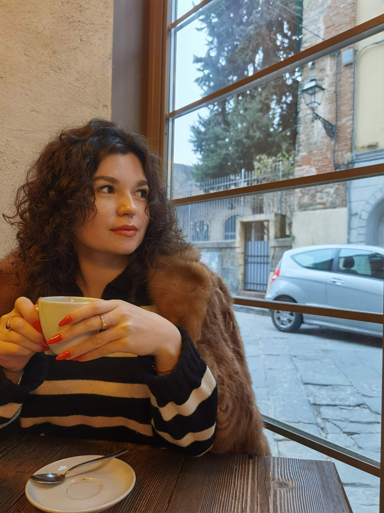
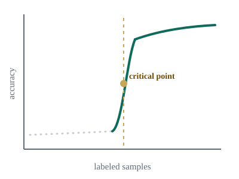
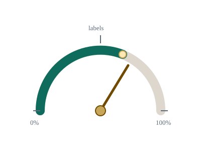
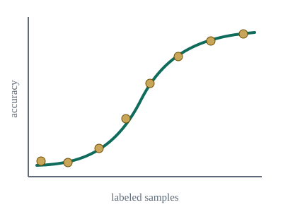
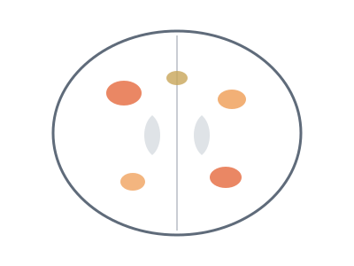
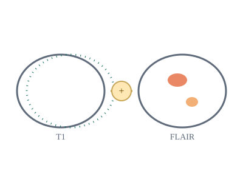

I work on active learning and deep learning for medical imaging, with a focus on predictive theories of sample efficiency and on applying deep learning to brain MRI — including white matter lesion localization and imaging biomarkers for Alzheimer's disease. I am advised by Prof. Mads Nielsen and Prof. Mostafa Mehdipour Ghazi. Since October 2025, I have been a visiting researcher in the Biomedical Imaging Computing Group at ETH Zürich, hosted by Prof. Ender Konukoglu. I hold an M.Sc. and B.Sc. in Biomedical Engineering from AGH University of Science and Technology, Kraków, and I co-organize the FOMO25 and FOMO26 brain MRI foundation model challenges at MICCAI.


A Mechanism-Driven Theory of Phase Transitions in Active Learning
European Conference on Computer Vision (ECCV), 2026.
PaperA mechanism-driven theory explaining the sharp, phase-transition-like jumps in accuracy that active learning methods exhibit as the labeling budget grows, identifying the conditions that trigger them.

How Many Labels Are Enough? ALDA: Active Learning Deployment Advisor for Medical Image Classification
2nd MICCAI Workshop on Efficient Medical AI (EMA4MICCAI), 2026. Oral
PaperALDA recommends how many labels a medical image classification project actually needs, turning active learning trajectories into a practical deployment budget instead of an open-ended search.

To Label or Not to Label: PALM – A Predictive Model for Evaluating Sample Efficiency in Active Learning Models
International Conference on Computer Vision (ICCV), 2025.
PaperPALM is a unified, interpretable model that characterizes active learning trajectories through achievable accuracy, coverage efficiency, early-stage performance, and scalability, validated on CIFAR-10/100 and ImageNet-50/100/200.

Deep Learning-Based Regional White Matter Hyperintensity Mapping as a Robust Biomarker for Alzheimer's Disease
SPIE Medical Imaging Conference, 2026.
PaperA deep learning pipeline that maps white matter hyperintensities to specific brain regions, producing region-wise burden estimates that hold up as robust imaging biomarkers for Alzheimer's disease.

Towards Scalable and Robust White Matter Lesion Localization via Multimodal Deep Learning
2nd Sorbonne-Heidelberg Workshop on AI in Medicine, 2025. Oral
PaperA framework for white matter lesion segmentation and localization that works directly in native space across single- and multi-modal MRI inputs, including a modality-interchangeable setup for missing sequences.
Journal of Alzheimer's Disease, Journal of Biochemistry and Bioinformatics, MICCAI'26, ECCV'26, NeurIPS'26.